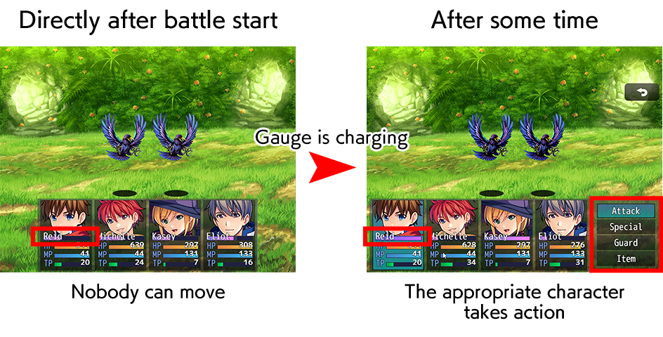

RPG MAKER MZ HELP
About RPG Maker MZ

Time Progression Battles
In RPG Maker MZ, you can switch to time progression battles in addition to the conventional turn-based battle format.
About Time Progression Battles
In time progression battles, actions are taken sequentially by actors whose gauges have been filled.
A TP gauge is displayed for each actor. The TP gauge gradually fills, and actors whose gauges have reached 100% select an action sequentially.
After their action, the TP gauge is reduced to 0 and begins to fill once more.

How to Switch to Time Progression Battles
When using time progression battles, you will make your configurations in [System 1] in the database.
Please view [System 1] → [Battle System] for more information.